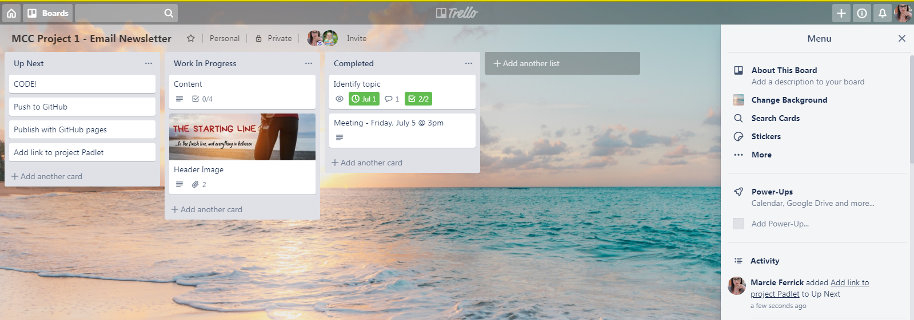
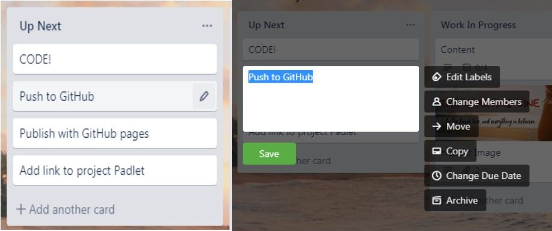
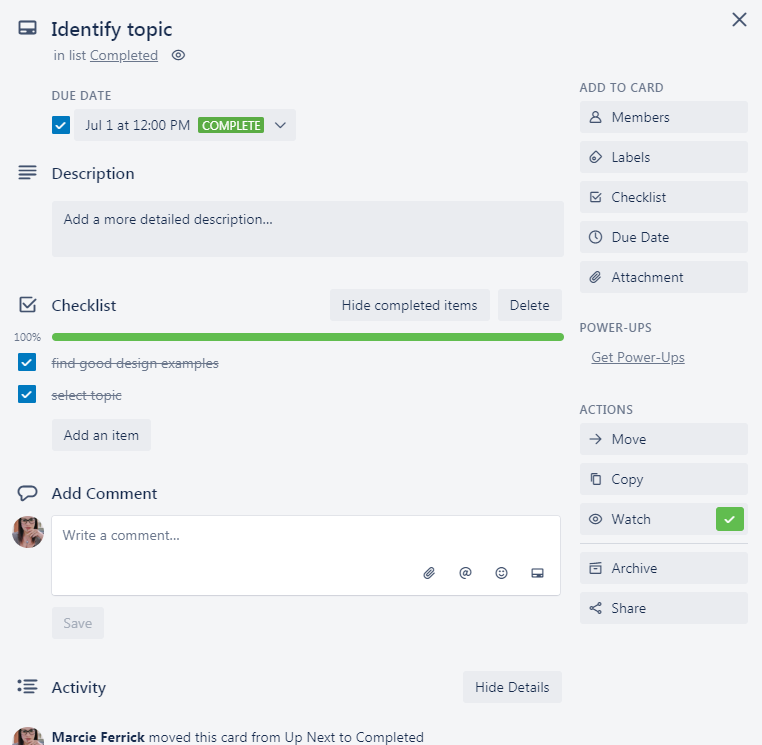

How to Organize Your Life With Trello
July 30, 2019 | Marcie Ferrick

Use Trello to organize your projects and your life, on your own or with a team.
A Trello board is essentially a virtual bulletin board that can be shared with anyone, anywhere. Whether you are planning your child’s first birthday party, working with a team to create marketing content, or building a website for a client, Trello will help you stay on track. While it’s a wonderful tool for collaboration, I’m going to start simple and focus here on using it as your personal to-do list. If you’re a nerd for organization, like me, or you’re just feeling like you could use some help in that area, you are going to love Trello!
Before we begin, a quick guide to Trello terminology:
- Board = project
- Lists = used to organize your cards
- Cards = tasks or ideas
- Menu = the control center located on the right side of your board (keep it open or collapse it when not needed)
Get Started
To create a board, simply click “create new board” from your homepage. Then, add your board title and choose whether you’d like your board to be public or private. You can also change your board’s background at this time, or you can do that later via the board menu.
Create Lists Next, you’ll create lists, or columns, in which to organize your tasks or project information. A simple way to begin is with three lists titled “Up Next,” “Work in Progress,” and “Completed” (but feel free to get creative).
Add Cards Now that your board is organized, it’s time to add your tasks, or cards. To do so, click “add card” under the appropriate list. Don’t worry, if you accidentally add a card to the wrong list, you can easily move it at any time; simply drag the card and drop it in the correct list!

Edit Your Cards The following actions can be completed by clicking the pencil icon at the right of your card’s label (hover over that area to view the icon): edit the label, change the members assigned to the card, move the card to another list, copy the card, change the due date, or archive the card.

To add more content to your card, click on the card’s label to view the “card back.”
Here, you can add and view the following:
- Detailed card description
- Comments
- Card activity
- Due date
- Members (for collaboration)
- Add an attachment
- Add labels
- Add a checklist
You can also move the card, copy the card, “watch” the card to get notifications when something changes, archive or share the card.

Board Menu To the right of your board, you will see the board menu, which can be collapsed by clicking the “X” in the top-right corner; click “show menu” to view the full menu again. From the menu, you can view a description of your board, change the background, search cards, add stickers, change the board’s settings, view archived items and board activity, copy or export your board. You can also add “power-ups,” such as Google Drive and Slack integration, which increase your board’s efficiency even more! Click here to learn more about power-ups.
You're All Set! Now that you’ve got your board(s) set up, use them to track your progress as you complete tasks. Create checklists and relish in the sight of each item being crossed out as you check them off! Interested in using Trello for collaboration? Use Trello for project management, communication, and tracking across your team. Click here to learn about best practices for team collaboration. Finally, you’ll need to create a Trello board to plan out all of the fun things you’ll do with the free time you’ve acquired by being so efficiently organized! Enjoy!